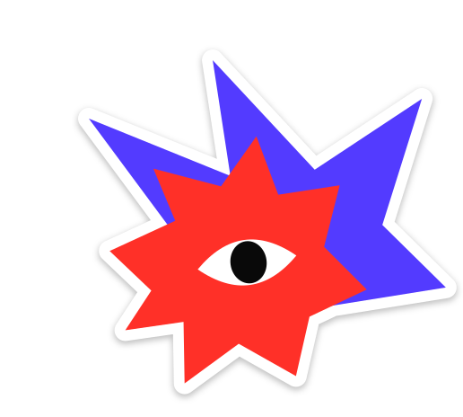
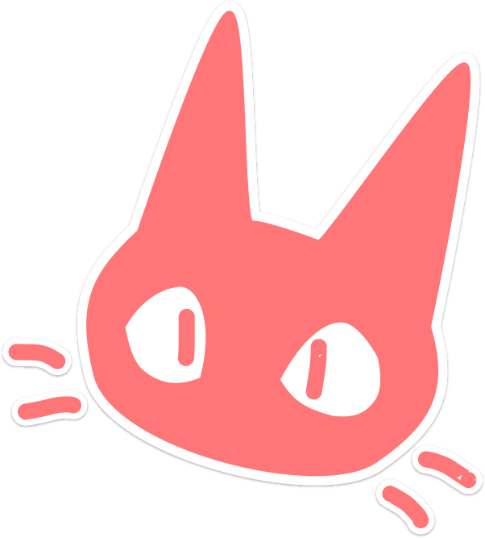

Universal Agent Skills
A production catalog of 46 modular capabilities for autonomous coding agents. Hand-crafted manifests, real test fixtures, and a zero-dependency CLI for Antigravity, Claude Code, Cursor, Codex, and Swarms.
$npx @rawenergon/skills add sticker-craft
Sticker Craft & 3D Peel Physics
Die-cut vinyl decal generation and interactive usePeel spring physics.
akatsuki-cloud

cosmic-eye
mochi-rocket

pink-catInteractive Decal Mechanics
Hover any decal above to test the tactile vinyl peel transformation: 3D perspective tilt, elevation offset, and dynamic drop-shadow expansion.
import { usePeel } from "./usePeel";
const { style, onMouseEnter } = usePeel(true);
return <svg style={style} ... />;
Skills Directory
Filter by engineering domain or search by keyword.